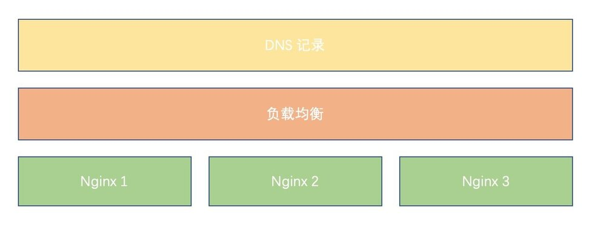
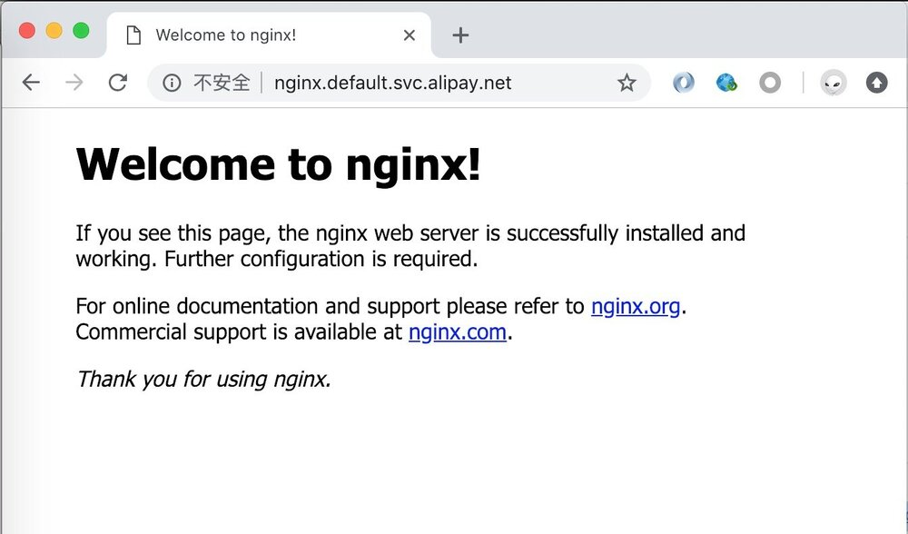
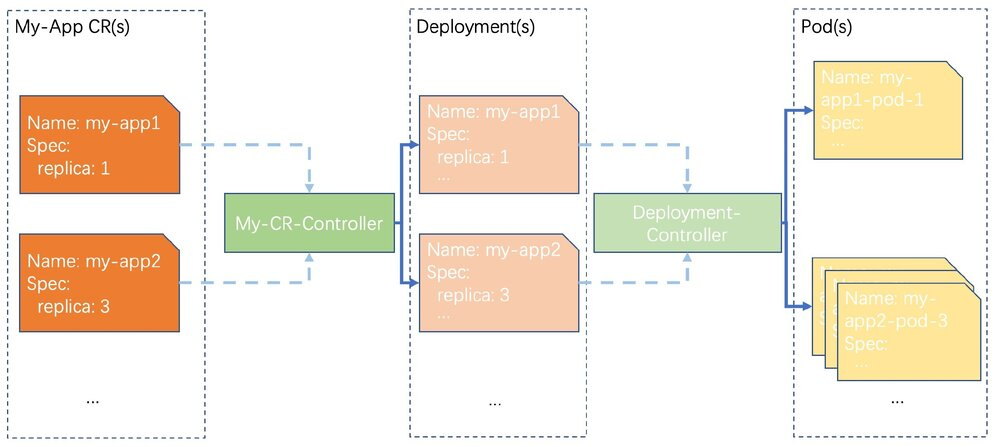
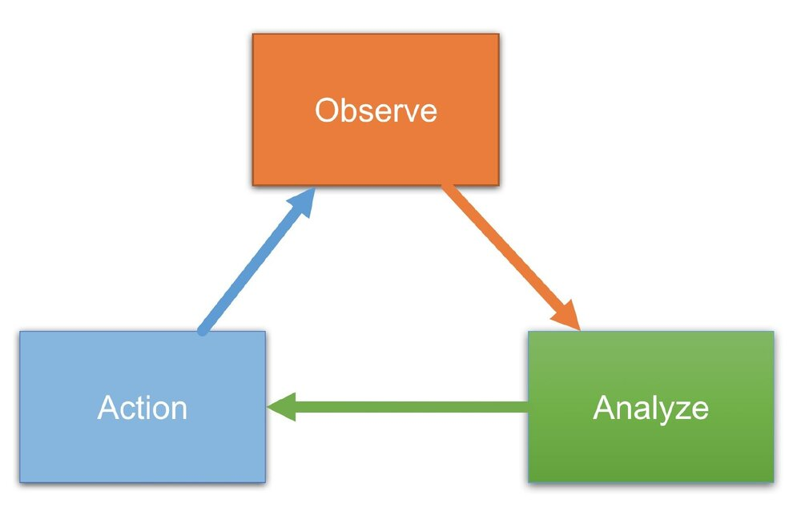

此文章适合没有任何 Kubernetes/容器/Docker 经验的同学 — 在不久的将来，你不懂如何操作 Kubernetes 接口，就等于现在的你不懂最普通的 Linux 命令。此文章阅读耗时大概 15 分钟。
蚂蚁金服资源调度组致力于将 Kubernetes 落地到世界上最有价值的金融科技独角兽公司，欢迎联系作者微信 answer1991chen 咨询招聘事宜。
文章 Markdown 源码位于 https://github.com/answer1991/articles/blob/master/Kubernetes-is-the-next-generation-os.md ，遵从 Apache License 2.0 开源协议。
导言
此文章着重介绍如何在入门阶段使用 Kubernetes，以及要面向 Kubernetes 编程带来的优势，不会介绍复杂的 Kubernetes 架构、实现。因此此文章适合没有任何 Kubernetes/容器/Docker 经验的同学，对 Kubernetes 有了解的同学也可以从此文章里面获取一些灵感，可以更加酷炫的玩转 Kubernetes。
希望在阅读完此文章之后，你可以从 “我需要一个 Linux VM 做开发、测试和部署”，变成 “我需要一个 Kubernetes 做开发、测试和部署”。
Kubernetes 是下一代操作系统
Kubernetes 是这几年非常热门的一个词汇，大概所有的软件工程师都已经听说过这个词。
那么 Kubernetes 到底是什么呢？可能 Google 会告诉你很多，但是我想告诉你的是：Kubernetes 是下一代操作系统；一个 Kubernetes 集群是一个资源无限大(可扩容)的虚拟机。而且，Kubernetes 的接口是是声明式的，是天然面向分布式系统而设计的（下面会详细介绍）。
说到这里，大家估计立刻就有疑问了。我想大概是这些：
Q: 那么，Linux、Windows 要被淘汰了？
A: 不会被淘汰，只是 Linux、Windows 是一个底层的单机操作系统。而我们这些普通的应用软件工程师将来都不会跟Linux 打交道了，都会使用 Kubernetes 这个更上层、同时功能也更强大的操作系统。
Q: 那么，我不学 Kubernetes 可以吗？
A: 不行！在未来不久的某一天，也许云厂商只卖 Kubernetes “虚拟机”了：阿里云不单独卖 ecs 了，亚马逊AWS，微软云，Google 云等各种云厂商都不卖 Linux 虚拟机了。如果你想买单机版的 Linux 虚拟机，他们都会一脸惊讶的问你，你买那么底层的、功能那么薄弱的计算机干什么？就像你现在从云厂商那里买不到一个还没有安装 Linux 的虚拟机一样。以后，云厂商交付的 “虚拟机” 必定是 “集群级别的虚拟机” ，而 “集群级别的虚拟机” 的操作系统就是 Kubernetes。
在不久的将来，你不懂如何操作 Kubernetes 接口，就等于现在的你不懂最普通的 Linux 命令。
Q: 那这样的话，我买不到 Linux 虚拟机，我连学习 Linux 的机会都没有了？
A: 当然不是，有了 Kubernetes，你可以在 1秒内自己搞一个任何 Linux 发行版本的 “单机虚拟机” 出来。
Q: Kubernetes 真的是一个操作系统？ Show me….
A:
| 功能/名词 | 单机 Linux | Kubernetes | 说明 |
|---|---|---|---|
| Shell, CMD | sh, bash | kubectl | kubectl 是 Kubernetes 的 shell 工具，有了 kubectl 你就可以连接并管理 Kubernetes 这个超级虚拟机了。 |
| 用户，登录 Linux | User, Group, ssh 登录 | kubeconfig 文件类似 Linux ssh 的 .key 文件，用户使用 kubeconfig 访问 Kubernetes 就自带了用户信息。Kubernetes 能根据用户限制权限，也能限制用户能使用的资源。kubectl 使用 kubeconfig 访问 Kubernetes 就好比使用 .ssh key 访问 Linux | Kubernetes 集群管理员(或者自动化的申请系统)为用户颁发 kubeconfig 文件。 |
| 进程 | 进程 | Pod | Pod 就是 Kubernetes 这个 “超级虚拟机” 的进程。 |
| 管理进程 | ps, kill | kubectl get po, kubectl delete pod | 发布、升级、管理 “进程”(或者说应用) |
| 配置管理 | 登录各个 Linux VM，替换机器上的文件。 | kubectl apply -f ./cm.yaml | 使用 ConfigMap 管理应用的配置文件，一次提交，进程的每个实例自动生效新的配置。由于篇幅管理，使用 ConfigMap 配置应用（“进程”）启动参数不在此文章里面举例。 |
| 发布、管理、升级应用 | 在 Linux 上面发布一个应用，需要一顿疯狂的操作：先阅读如何发布、参数有什么、下载二进制包、搞定一些配置文件，然后运行应用。 | kubectl apply -f ./my-app.yaml | my-app.yaml 可能是应用提供商提供的、面向 Kubernetes 发布应用的“菜单”文件(为什么叫“菜单”我后面会介绍)。只要提交这个“菜单”，应用就部署好了。Kubernetes 让一切简单，而且，它是分布式，是天然容灾的。只要向 Kubernetes 提交 Deployment 这样的“资源”即可，下文有介绍。 |
| 限制应用资源 | 一顿疯狂的操作，把应用进程的 Cgroup 限制好。 | 发布应用时已经做了 | Kubernetes 让一切简单。 |
| 分布式应用发布 | 在各个 Linux 虚拟机上面发布好应用，然后把他们组网。 | 发布应用时已经做了 | 还是那句话，Kubernetes 让一切简单。 |
| 分布式应用容灾 | 搞个监控，监控我们各个 Linux 虚拟机上面的应用是不是不健康了。不健康了的话，我们起床，来一次“一顿操作猛如虎”的故障恢复操作。 | / | 天然容灾，安心睡你的觉。 |
| 数据持久化，故障时数据迁移 | “一顿操作猛如虎” | 用 PV（持久化存储卷），容灾把应用的一个应用实例从 “节点一” 切换到了 “节点二”，都不用做任何数据迁移。新的应用实例起来就能使用老数据。 | 还是那句话，Kubernetes 让一切简单。我都不用关心这个事情。（由于篇幅管理，下文的例子中也不会涉及 PV 的例子） |
“一顿操作猛如虎” 听起来很酷，但是你在做一些没必要的事情，同时你做了这些事情并不讨好你的老板，可能在因为你的失误操作引起更大的故障和问题。
面向 Kubernetes 做最简单的操作，达到最佳的效果，才是更酷的事情。
A: 行了行了，别说那么多了，我还是需要一个 Linux VM。
Q: 好的，我给您一个 Kubernetes，然后给你一个 基础 OS Pod “菜单”文件，然后您自己就可以创建任何一个 Linux 发行版、任何一个 Linux 版本的的 Linux VM了。在文章的最后会有介绍。
小试牛刀
既然是“小试”，那么我们来尝试一个最简单的应用，一个 HTTP 服务： nignx。同时，我应该部署一个高可用、多副本(例子中为3副本)天然容灾的 nginx。
部署完成的结构图大概如下所示：

没有 Kubernetes 之前的部署
在没有 Kubernetes 之前，我们大概要做这么些操作才能交付这个 nginx 服务：
- 到三个 Linux VM 上面，分别把三个 nginx 进程起好。这里可能还需要关心 nginx 进程怎么起、启动命令是啥、配置怎么配。
- 到负载均衡管理页面，申请一个负载均衡，把 3个 nignx 进程的 IP 填入。拿回负载均衡的 IP。
- 到 DNS 管理页面申请一个 DNS 记录，写入把拿到的负载均衡的 IP 写入 A 记录。
- 把这个 DNS 记录作为这个 nginx 服务的交付成果，交付给用户。
有了 Kubernetes 的部署
有了 Kubernetes 之后， 我们只需要写一个 nginx 如何部署的 “菜单”，然后提交这个“菜单”给 Kubernetes，我们就完成了部署。 “菜单” 是一个 yaml 文件(例子中文件名 nginx.yaml)，大概这个样子:
apiVersion: apps/v1
kind: Deployment
metadata:
name: nginx
spec:
replicas: 3
selector:
matchLabels:
app-name: my-nginx
template:
metadata:
labels:
app-name: my-nginx
spec:
containers:
- name: nginx
image: nginx
---
apiVersion: v1
kind: Service
metadata:
name: nginx
spec:
selector:
app-name: my-nginx
type: ClusterIP
ports:
- name: http
port: 80
protocol: TCP
targetPort: 80
提交“菜单”到 Kubernetes 集群：
$ kubectl apply -f ./nginx.yaml
访问刚部署的 HTTP 服务:

发生了什么？这里大概简单的介绍一下我们的“菜单”：
- 我们向 Kubernetes 提交了一个叫 nginx 的 Deployment。Deployment 是 Kubernetes 里的一种副本保持 “资源声明”，我们在我们的 Deployment 声明了 需要3个副本(replica: 3)，副本的内容(template: … )是用 nginx 镜像启动的Pod(Pod 即 Linux 里的进程，如上章节介绍的)。如果没有玩过 docker 的同学，可以把 nginx 镜像 认为是 nginx 二进制包，只不过它是 docker 镜像方式存在的，不在这里详细展开。我们的 nginx Pod 打上了 my-app=nginx 这样的 Label, Label 可以理解成 分类“标签”，别人(Service)来定位我们 Pod 需要用这样的 “标签” 来匹配。
- 我们还向 Kubernetes 提交了一个 Service。 提交一个 Service 就是向 Kubernetes 申请一个 负载均衡。Service 依靠 Label (selector: …) 去找到它的后端真实进程(Pod)。
- Service 会根据规则自动生成域名。规则不在这里详细展开介绍。
- 我们就能用 Service 自动生成的域名作为交付成果，交付给用户了！
容灾
Deployment 能自动副本保持，即我们的 nginx Pod 少了一个，Kubernetes 能自动帮我们补齐。
变更、发布、升级
- 如需要调整副本数目，我们只需要修改 Deployment.Spec.Replica 字段，再次
kubectl apply -f ./nginx.yaml即可，副本调整完成。 - 如果我们需要升级镜像（nginx 二进制版本），同样的修改 PodSpec.Containers[*].Image 即可，然后
kubectl apply -f ./nginx.yaml - Deployment 支持滚动升级，在升级时可以一个个升级你的 Pod（滚动升级）。当然，我们线上可能有更加复杂的升级策略，蚂蚁金服提供的增强版 Kubernetes 提供比 Deployment 更加实用的升级策略，比如“灰度升级”， “分批升级” 等更加符合生产环境发布策略的升级方案。
关于“菜单” 和 声明式系统
Kubernetes 是声明式的系统。关于详细的介绍 “什么是声明式系统”，您可以去 Google 或者内网上面也有许多声明式系统的介绍。
我这边有个简单的比喻：假如你需要一桌菜（至于为什么是“菜”，是因为这个文章是我在做饭的时候构思的）。但是，这个放菜的 “桌子” 不太稳定(或者说有老鼠来偷吃菜品)，一直发生一些事故，就像我们的线上部署应用的环境一样，服务器可能故障。当你需要在这个桌子上面摆上一桌 “菜” 的时候，“菜”可能会坏掉。别担心，在声明式系统里，“厨师长”是个尽职的好同志，当你提交了一份“菜单”之后，我们的“厨师长”会一直保证你桌子上的菜一直会和你写的“菜单”里的菜一模一样。如果某道“菜”坏了，“厨师长”就帮你再做一份。
在 Kubernetes 里面，有各种各样这样尽职的厨师长（有负责 Deployment 的厨师长，有负责 Service 的厨师长等等）。只要天没塌下来，你提交的“菜单”里的菜都会一直美美的在桌子上“迎客”。
那么，我们回过头来看我说的 “不久的某一天，云厂商只卖 Kubernetes 虚拟机了，而不单纯的卖 Linux VM”。你真的要买几个 Linux VM 自己去启动进程（命令式），然后自己去搭建一套声明式的系统去守护你的落在各个机器上的分布式应用进程？而不使用更高级、更好用的 Kubernetes 操作系统？
谈软件交付
软件交付即把我们开发的一套应用程序部署到其它环境。
软件交付几个重要关注的点：
- 如何快速的部署一套我们的 “全家桶” 应用到客户环境。为什么说“全家桶”，是因为我们不可能只交付一个 nginx 服务，我们肯定会交付一套非常复杂的应用或者中间件系统，比如交付一套 “支付宝系统” 到某个商业银行。
- 如何在客户现场做自动化容灾，降低驻场和支持成本，或者根本不驻场。
- 如何简单、可靠地升级后续的版本。
- 上述的几点，不管是 “部署”，“容灾”，“升级” 都需要关注客户现场的运行环境，我们有没有办法屏蔽这种运行环境差异。比如：我们带过去的可运行软件，在客户的 OS 上是不是能运行；客户现场的负载均衡方案都不一样，如果到了客户现场查看了他们的负载均衡方案之后再写一个负责均衡部署方案肯定大大降低了交付效率。
- 客户现场的环境不一样，必定带来配置文件不一样。让一个现场交付人员弄懂所有应用的配置参数，是不是一件让他很头疼的事情？
软件交付方案的历史：
- 交付 源代码： 这应该是最早的时代，客户现场的环境（操作系统、机型）都不同，需要带着代码到客户现场编译，然后运行软件。
- 交付 可运行文件：像 Java 提出的 “Build once, run everywhere” 概念，在这个时代，我们可以面向一个运行时虚拟机交付软件。或者我们都面向 Linux 交付，我们的使用 Go 编译的二进制，能顺利的部署到大多数的 Linux OS 上。但是这种方案也强依赖客户现场需要装上指定版本的 Java 虚拟机，或者 Linux 特定的版本(应用依赖 Linux 内核特性)。
- 交付 镜像：交付镜像，最大可能的屏蔽了底层 OS, Java 虚拟机的差异。在镜像里面，我们把自己需要的 OS 基础 和 Java 虚拟机也装上了。不再依赖客户现场的 OS 和 Java 虚拟机版本了。
镜像最大可能的程度上把我们需要的运行时环境和我们的应用可执行文件打在一起，在各种环境下面都能完美地运行。那么，只有镜像就能快乐的交付软件了吗？在我眼里，镜像做的事情完全不够。原因无非也是这么些：
- 怎么配置启动参数，要交付人员辛苦的读懂启动参数配置说明说吗？
- 怎么做分布式应用的组网、服务发现
- 怎么做容灾
- 怎么做部署的元数据录入： 今天我在客户现场把 A 应用部署到了 节点1 上面，我要把这个信息记在哪儿？
你可能会告诉我，你说的这些我们的 PaaS 系统都能搞定。是的，你说的没错！但是当 PaaS 能用统一标准管理应用、屏蔽应用的细节，解决应用的组网和服务发现，监听每个应用的实例变化（自动化感知故障发生）然后自动恢复（副本保持），那么它就已经差不多是 Kubernetes 了。把上述的所有功能逻辑都整合在 PaaS，势必导致 PaaS 的臃肿，我们是不是可以面向 Kubernetes 这个 OS 去做一个轻量级的 PaaS？因为很多功能在 Kubernetes 已经有了，而且肯定比我们自己研发的 PaaS 要好用许多。我们的 PaaS 是不是可以向 Kubernetes 提交 Deployment，而不是自己亲自去做进程拉起、副本健康检查、副本保持等功能。
面向 Kubernetes 交付软件
正如我上文所说，可能有一天所有客户现场的 OS 都是 Kubernetes，那我们是不是可以像上文启动 nginx 服务一样，用这种 YAML “声明” 的方式去交付我们的软件？
当然可以！但是，当我们去交付一个 “全家桶” 服务的时候，我们会发现我们的 YAML 写了几千行，甚至上万行了。这个上万行的 YAML 谁来维护？就算是分开给各个子应用的 owner 维护，是不是也可能会发生牵一发而动全身。有没有更加简单的方式？
当然有。我们再回来谈 “菜单” 和做菜。我是一个吃货，但是我很懒。当我点菜的时候，非常希望点一个 “套餐”，而不希望一个个的去点每个菜，更不希望弄懂菜是怎么做出来的。我想要点一个 “满汉全席”(复杂的应用)，可我不想清楚的弄懂套餐里面单独有什么菜、每个菜的配方是什么。一个“满汉全席”(复杂的应用)里面，可能有“山珍”(数据库)和“海味”(Web服务)。我只想告诉我们的“大厨”， 我要 “满汉全席” ，然后我们的 “大厨” 就心领神会的知道 “满汉全席” 里面有什么，然后把 “满汉全席” 给做出来。那么这个 “大厨” 要亲自做这里的每道菜吗？也不必，因为我们的 “大厨” 也可能是个 “懒人”，当需要一桌 “满汉全席” 的时候，他只会告诉负责 “山珍” 的 “大厨” ，要一桌 “山珍”（数据库），然后告诉负责 “海味” 的 “大厨”，要一桌 “海味”（Web服务）。当我们的大厨发现 “山珍“ 和 “海味” 都准备好的时候，他会告我 “满汉全席” 准备好了。
是不是发现和交付软件很像？为什么我们不交付一个 “大厨” 出去？到客户现场负责交付的人员，只要告诉 “大厨” 我们需要一个 “满汉全席” 这种套餐级别的声明就行了。并不是说套餐没有参数，只是套餐的参数能做到对用户屏蔽不必要的细节：比如我们的 “满汉全席” 就只要一个参数，只要让用户填他的 “满汉全席” 需要支持 “多少QPS”。
面向 Kubernetes 编程：使用 Operator 交付软件
上面提到的使用“交付大厨”的方式去交付软件看起来很美好。那么，如何实现呢？也就是我们要怎么培养出属于我们自己的“厨师”。
其实我们在 “小试牛刀” 的章节已经介绍了一位 “厨师” 了： 负责 “Deployment” 的厨师。只是，他的工作比较通用化、没有什么业务含义。它只是负责守护用户在 “菜单” 里面描述的 “进程”(Pod) 数量，至于怎么起 “进程” 都是用户传入的。
那么，我们是不是可以根据这个 “厨师” 的模仿出有业务含义的 “厨师”？比如，业界有一位比较出名的一个 “厨师”，是负责 etcd 集群的。如果我需要一个副本数是3的 etcd 集群，只要向 Kubernetes 提交如下的一个 “菜单”：
apiVersion: "etcd.database.coreos.com/v1beta2"
kind: "EtcdCluster"
metadata:
name: "example-etcd-cluster"
spec:
size: 3
“etcd厨师长” 就会根据这个 “菜单” 做出一个副本数是3（Spec.Size=3）的 etcd 集群给你。用户不需要知道 3 副本的 etcd 集群里每个副本参数是什么样的。
“etcd厨师长” 真实的名字叫 etcd-operator。顾名思义，operator 就是“厨师长”，“xxx-operator”就是 “xxx应用-厨师长”。在不久的将来，我觉得我们也会有 “xx-db-operator”，“xx-web-operator”，我们也用这种简洁明了的声明方式，快速得到一个 db 实例， 或者一个 “xx-web” 应用。
回到怎么培养厨师长的话题，首先我们来介绍一下名词:
- CRD (CustomResourceDefinitions)：定义“满汉全席”这样的全家桶。Deployment 是 Kubernetes 官方的资源定义，Kubernetes 同时向开发者提供了 “自定义资源定义”。开发者可以向 Kubernetes 集群提交有 “满汉全席” 的定义，那么当用户提交一桌 “满汉全席” 时，Kubernetes 就明白用户的请求了，也就是说 Kubernetes 知道用户所说的 “满汉全席” 是什么了。
- CR (Custom Resources)：一个 CRD 实例，即一桌 “满汉全席”，也就是类似上文一样的 YAML 声明。
- Custom Controller： 我们的“厨师长”。当 Controller 发现用户提交了 一桌 “满汉全席”，那么他就开始做菜了。当然它并不是完全亲自做每道菜，正如我上文所说。我们的 “厨师长” 可以依赖另一位 “厨师长”，比如 “db 厨师长” 可以依赖 “Deployment 厨师长”，当用户需要一个 db 实例的时候，“db 厨师长” 只需要负责再向 Kubernetes 提交一个 Deployment 声明即可。注意：“厨师长” 之间的交互也是靠 “CR” 或者 Kubernetes 官方定义的资源（如 Deployment、Pod）。“厨师长” 一般也是通过 Deployment 的方式部署在 Kubernetes 集群内（保证了 “厨师长” 自身的稳定性），除非像 “Deployment 厨师长” 这种 Kubernetes 核心 “厨师长”的稳定性 由 Kubernetes 服务提供商保证。
- Operator: Kubernetes 里的 Operator，即 CRD + Custom Controller。
一个简单的图将它们串起来：

上图展示了我们的 My-App-Operator 的 “厨师长” 的关系图。当我们需要一个 “my-app” 应用实例时，我们只要告诉我们的 “厨师长” 是需要多少副本数的实例。我们的 “厨师长” 自动将需求转化成 Deployment，其它的功能就完全依靠了 “Deployment 厨师长”。
如何面向 Kubernetes 写一个 Operator
首先我们来看一下 “厨师长” (Operator) 需要关注一些什么事情，以及它做了什么事情：
- 多久要开始做菜（Observe）：即 “厨师长” (Operator/Controller) 需要知道多久他要开始工作了。当用户提交了 “菜单”(CR)，“厨师长” 要开始做菜。或者，因为 “桌子” 上少了一个预期中的 “菜”(Pod 因为故障少了一个)，“厨师长” 也要开始做菜了。
- 做什么菜（Analyze）： “厨师长” 首先要看看桌子上的菜，再对比一下用户的 “菜单”，得出还缺少什么菜，那么就做什么菜。
- 开始做菜（Action）：得出做什么菜之后，那么后面的事情就简单了。通知其他 “厨师长” 做菜（提交一个其他的CR），或者自己亲手做个菜（提交一个 Pod）。
这3件事情，其实就是 Controller 模式的核心三件事：

那么用 Kubernetes 写一个 Operator 需要多久？
可能从 “0” 到可以把 Operator 运行起来只需要 10分钟吧。因为 Kubernetes 的 Kube-Apiserver 提供天然的 watch 接口，我们可以去关注我们在意的资源(我们的 CR，我们的 Pod 等)，这样我们的 “厨师” 就能很自然的得到通知该干活了。然后 “厨师” 就开始做出分析，到最后再向 Kube-Apiserver 提交我们想要的资源（Deployment，或者其它的 CR）。我们都面向 Kube-Apiserver 做编程， 所有的“厨师”都 向 Kube-Apiserver 提交、修改、Watch资源作为统一的交互协议，一切都会变得简单许多。
最后，再加上 Operator 的脚手架帮我们生成基础代码（初始化 Kubernetes 客户端，建立 Watch 等），我们开发者只需要关心的怎么 Analyze 和 Action 即可。 Operator 的脚手架社区常见的有 kube-builder 和 coreos 提供的 operator-framework 等。
我们用伪代码来写一下上文画的 My-App-Operator 核心逻辑 （其它都脚手架做好了，甚至如何 build，Operator 本身它自己如何部署的“菜单” YAML 都是脚手架生成好了）：
// Reconcile 即我们 Operator 核心代码逻辑
// Reconcile 何时触发，也是 Operator 生成好了
func Reconcile(crName string) error {
// 获取 CR (用户提交的“菜单”)
cr := client.getCR(crName)
// 计算出这个 CR 期望的 Deployment (用户提交的“菜单”应该在桌子上有什么菜)
desireDeployment := getDesireDeployment(client, cr)
// 目前集群里面实际的 Deployment (实际上桌子上有什么菜)
deployment := client.GetDeployment(crName)
// 如果期望和实际的不太一样，把实际的更新一下就行了。
if diff(desireDeployment, deployment) {
return client.UpdateDeployment(desireDeployment);
}
// 如果期望和实际都一样，什么事情都不做了。
return nil
}
面向 Kubernetes 变成 和 Operator 的优势总结
- 统一的信息获取源和统一的接口： Kube-Apiserver 就像是一个大的信息流转中心。所有的组件（“厨师长”）都通过这个中心上传他负责的资源（CR，Deployment，Pod都是 Kubernetes 的资源）的信息，同时，他也通过这个接口，去感知其它资源状态的变化，如果这些变化是他感兴趣的，那么他就开始工作（“厨师长” 开始工作）。
- 构建在 Kubernetes 核心组件以及 社区通用的 Operator 之上：站在巨人的肩膀上能让我们的工作更加的减负同时达到更加理想的效果。上文中，我们的 Operator 可能在依赖 Deployment 之后，他负责的 “菜”（Pod）就自带副本保持功能。同时，假如我们的应用（DB，Web）要依赖社区的 MySQL 数据库，那么我们的应用 Operator（Web + DB） 可以通过社区的 MySQL-Operator 提供的 CR 快速建出 MySQL 实例，然后再使用 Deployment 建出 Web。
优秀的社区 Operator
- 优秀的社区 Operator (awesome-operators): https://github.com/operator-framework/awesome-operators
FaaS
用 Operator 交付软件，目前看起来是最酷的一种交付软件方式。
但是在当今云原生技术快速发展的时代，可能在不久的将来，Operator 模式可能也会被淘汰。因为 Operator 也需要开发者关注一些部署的细节，让开发者真正只关注在自己的业务逻辑，“业务代码” 变成 “服务” 完全对开发者透明，可能需要比 Kubernetes 更上层的框架 - FaaS框架。
FaaS 全称是 Function as a service 。用户只要写自己的业务函数，向 Kubernetes 提交业务函数，FaaS 框架将业务函数变成 Deployment，变成 Pod，变成 Service。但是 FaaS 目前还在发展阶段，并不像 Kubernetes 已经变成事实标准，这里不再详细讨论。
落地
说了那么多，其实我的初衷是希望每个开发者都从 Linux VM 转向 Kubernetes “VM”。但是转变发生在每个人身上，应该是有各种困难。我能想到的一些最基本的困难大概列在下面，同时欢迎跟我交流你的一些困惑。
代码变成镜像
大家都知道，Kubernetes 只允许以 Pod 的方式运行“进程”。在 FaaS 没成熟之前，如何把我们的代码变成一个镜像是一个比较头疼的事情。可能应用的开发同学并不想自己去理解 docker，怎么去打镜像。
别担心！Spring 框架或者其扩展的脚手架应该已经可以在工程里自动添加 Dockerfile 文件，使用脚手架之后，用户只要执行 make image 这样的命令，就能构建出镜像了。
别说了，我还是想要一个 Linux VM
向 Kubernetes 提交下面这样的一个 YAML 文件，你就能得到一个 ubuntu VM：
apiVersion: v1
kind: Pod
metadata:
name: my-vm-1
spec:
containers:
- name: vm
image: ubuntu
同时，告诉你一个更酷炫的玩法：自己定制一个属于你自己的 Linux 发行版！在原有的 OS 镜像基础上，加上你的 Shell 工具脚本、写一串向爱人表白的话、搞个开机 Logo，都很简单！做一个属于你自己的 Linux 镜像，那么在世界的任何地方，你都能起动一个经过你定制的 Linux VM。
哪里去获取一个 Kubernetes
首先，试试 mini-kube，或者立刻向阿里云买一个！